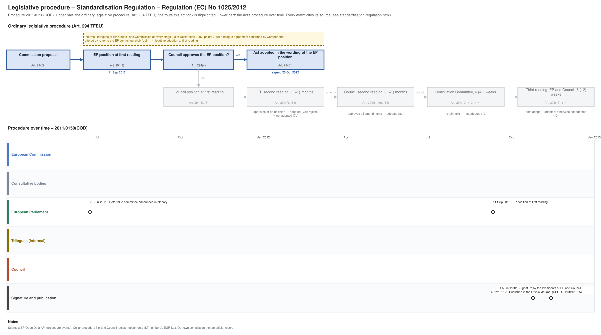

← Regulation timeline › Standardisation Regulation › Legislative procedure · All procedures
Procedure 2011/0150(COD), completed. Drawing: SVG · PNG · PDF (A3) · draw.io · Page as Markdown: standardisation-regulation.md
| Stage | Completed, published 14 Nov 2012 |
|---|---|
| Latest activity | 14 Nov 2012 · Signature and publication: Published in the Official Journal (CELEX 32012R1025) |

| Date | Actor | Event | Document | Source |
|---|---|---|---|---|
| 2011-06-23 | European Parliament | Referral to committee announced in plenary | EP procedure file | EP Open Data API, procedure 2011-0150 (REFERRAL) |
| 2012-09-11 | European Parliament | EP position at first reading (Art. 294(3) TFEU) | EP procedure file | EP Open Data API, procedure 2011-0150 (PLENARY_AMEND_PROPOSAL) |
| 2012-10-25 | Signature and publication | Signature by the Presidents of EP and Council | EP procedure file | EP Open Data API, procedure 2011-0150 (SIGNATURE) |
| 2012-11-14 | Signature and publication | Published in the Official Journal | CELEX 32012R1025 · en.md de.md | EP Open Data API, procedure 2011-0150 (PUBLICATION_OFFICIAL_JOURNAL) |
Every document the Council register, the EU database of the Parliament of Austria or the EP lists for the procedure, with its state: public documents link to the official file; documents that are not public link to their entry in the Austrian database where there is one (metadata only). "Unofficially leaked": a copy is known to circulate outside the institutions; it is not published here.
| Date | Document | Kind | Subject | Status | Text |
|---|---|---|---|---|---|
| 2012-05-07 | A7-0069/2012 | ep-report | REPORT on the proposal for a regulation of the European Parliament and of the Council on European Standardisation and amending Council Directives 89/686/EEC … | public | – |
Unofficial Markdown conversions for reading, searching and project folders; only the official document is authentic. "Read" opens the rendered text on GitHub, where a link to a provision (#art-13, #rec-12, #annex-i) jumps to it.
| Date | Stage | Document | Markdown | Read |
|---|---|---|---|---|
| 2012-11-14 | oj | CELEX 32012R1025 | en de | GitHub |
Comitology committees of Member State representatives give opinions on draft implementing acts (Regulation (EU) No 182/2011); expert groups advise the Commission on delegated acts, guidance and implementation. Meetings and documents as published in the Comitology Register and the Register of Commission expert groups, from 2024 on.
Comitology committee C41700, GROW; examination procedure (Art. 5, 6 and 7 of Regulation (EU) No 182/2011); advisory procedure (Art. 4 of Regulation (EU) No 182/2011).
Expert group E03874, GROW.
| Date | Meeting | Documents |
|---|---|---|
| 2026-03-19 | 4th High-Level Forum on European Standardisation | agenda |
| 2025-01-29 | 3rd High-Level Forum on European Standardisation | agenda · minutes |
Expert group E02758, CNECT.
| Date | Meeting | Documents |
|---|---|---|
| 2025-10-23 | 44th Meeting of the European Multi-Stakeholder Platform for ICT Standardisation | agenda · minutes |
| 2025-05-22 | 43rd Meeting of the European Multi-Stakeholder Platform for ICT Standardisation | agenda · minutes |
| 2025-02-20 | 42nd Meeting of the European Multi-Stakeholder Platform for ICT Standardisation | agenda · minutes |
| 2024-09-12 | 41st Meeting of the European Multi-Stakeholder Platform for ICT Standardisation | agenda · minutes |
| 2024-03-21 | 40th Meeting of the European Multi-Stakeholder Platform for ICT Standardisation | agenda · minutes |